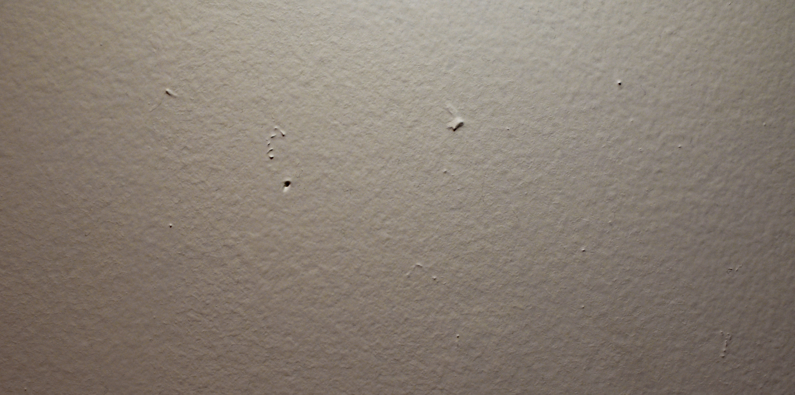

THE QUEER OBJECTS ARCHIVE
A Digital, Archival Exploration
ABOUT
ARCHIVE
My work with exploring LGBTQ narratives began from my interests in relating my own personal experiences as a gay man to other people and their stories in this community. I began to notice many similarities but also intricacies between our experiences and the objects representative of them present a small look into some of the physical materials that surround this culture and experience. Through a short research period of interviewing different members of my community and gathering their objects, I wanted to create archival portraits that represented these stories, as well as the person who uses these objects everyday. The final project culminated in both a physical representation of this archive along with this digital rendering. In both of these presentations, I wanted to uncover and present these objects in an explorative way that draws a broader audience into making their own conclusions about each frame. Moreover, I wanted to create a space that shows the connections and differences between individuals in the LGBTQ community and celebrates them as something worthy of being archived and explored. Although this project is currently a triptych, I hope to continue meeting new people who are willing to add to this project and share their background and story.